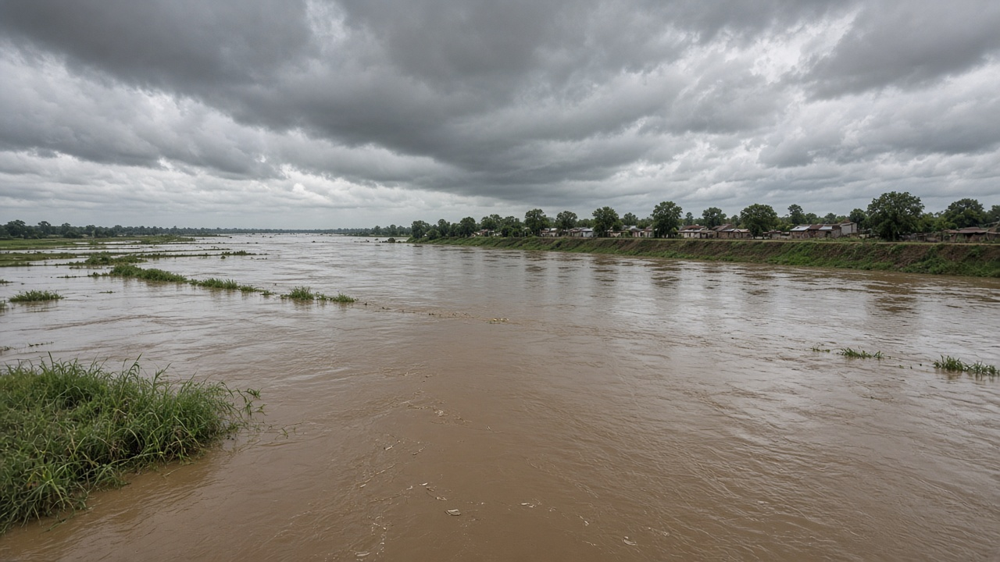
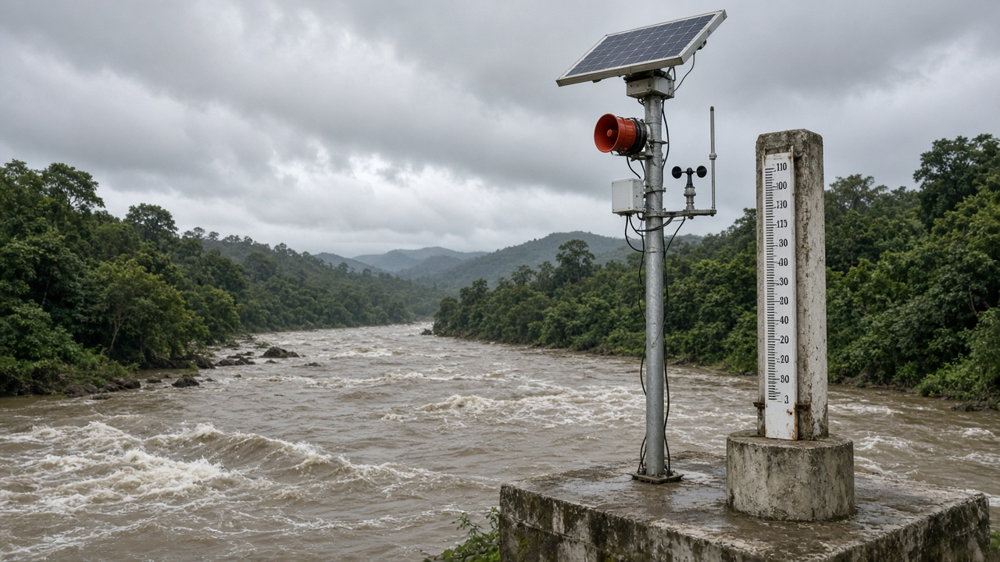
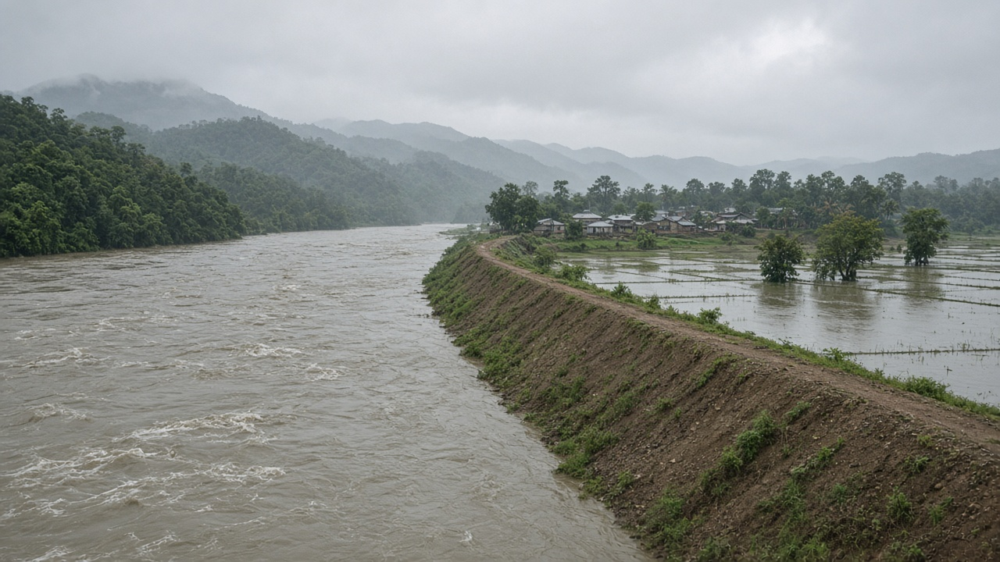

Flood Risk Management and Early Warning Systems
Published on August 5, 2026

Flood risk management combines structural and non-structural measures to reduce the likelihood and impact of flooding on people, infrastructure, and ecosystems. Structural approaches include embankments, retention basins, floodwalls, and improved drainage, while non-structural strategies focus on land-use zoning, building codes, insurance, public education, and emergency preparedness. Because no defense system is perfect, the most effective flood programs integrate engineering with community awareness and institutional coordination so that when waters rise, people know where to go and how to protect lives and essential assets.
Early warning systems are a cornerstone of non-structural flood risk reduction. They rely on rainfall gauges, river-level sensors, weather radar, satellite precipitation estimates, and hydrological models to forecast when and where floods may occur. Alerts must reach vulnerable communities through sirens, SMS messages, radio broadcasts, and local volunteer networks with enough lead time for evacuation. In Nepal's monsoon season, flash floods in steep tributaries can develop within hours, making real-time monitoring and pre-identified evacuation routes especially important for settlements near riverbanks and landslide-prone slopes.
Successful flood risk management also addresses the root causes of vulnerability. Deforestation, unplanned urban expansion into floodplains, clogged drainage channels, and inadequate maintenance of embankments all amplify damage when extreme rainfall occurs. Ecosystem-based approaches such as restoring wetlands, maintaining river flood corridors, and protecting upstream forests help absorb peak flows naturally. Community flood committees that map hazard zones, stock emergency supplies, and conduct regular drills strengthen preparedness at the local level. By linking hydrological science with inclusive community planning, governments can shift from reactive disaster response toward proactive risk reduction, saving lives and reducing the economic burden of recurring flood seasons in river basins across South Asia and beyond.

बाढी जोखिम व्यवस्थापनले मानिस, पूर्वाधार र पारिस्थितिकी तन्त्रमा बाढीको सम्भावना र प्रभाव घटाउन संरचनात्मक र गैर-संरचनात्मक उपायहरू मिलाउँछ। संरचनात्मक उपायहरूमा बाँध, जल धारण बेसिन, बाढी पर्खाल र सुधारिएको जल निकास समावेश छ, भने गैर-संरचनात्मक रणनीतिहरू भू-उपयोग विभाजन, भवन कोड, बीमा, सार्वजनिक शिक्षा र आपतकालीन तयारीमा केन्द्रित छन्। कुनै पनि रक्षा प्रणाली पूर्ण हुँदैन, त्यसैले सबैभन्दा प्रभावकारी बाढी कार्यक्रमहरूले इन्जिनियरिङलाई समुदाय सचेतना र संस्थागत समन्वयसँग मिलाउँछन्, ताकि पानी बढ्दा मानिसहरूलाई कहाँ जाने र जीवन र आवश्यक सम्पत्ति कसरी बचाउने थाहा होस्।
प्रारम्भिक चेतावनी प्रणालीहरू गैर-संरचनात्मक बाढी जोखिम न्यूनीकरणको आधारशिला हुन्। तिनीहरूले वर्षा मापक, नदी स्तर सेन्सर, मौसम रडार, उपग्रह वर्षा अनुमान र जलवैज्ञानिक मोडेलमा भर पर्छन्, बाढी कहिले र कहाँ हुन सक्छ भन्ने पूर्वानुमान गर्न। चेतावनीहरू साइरेन, एसएमएस, रेडियो प्रसारण र स्थानीय स्वयंसेवक नेटवर्कमार्फत जोखिममा रहेका समुदायहरूसम्म पुग्नुपर्छ, जसमा निकासीका लागि पर्याप्त समय होस्। नेपालको मनसुन मौसममा, खडा सहायक नदीहरूमा अचानक बाढी घण्टाभित्र विकसित हुन सक्छ, जसले नदी किनार नजिकका बस्ती र पहिरो-प्रवण ढलानका लागि वास्तविक-समय अनुगमन र पहिले नै तोकिएका निकासी मार्गहरू विशेष महत्त्वपूर्ण बनाउँछ।
सफल बाढी जोखिम व्यवस्थापनले कमजोरीका मूल कारणहरू पनि सम्बोधन गर्छ। वन विनाश, बाढी मैदानमा अनियोजित शहरी विस्तार, बन्द जल निकास नहर र बाँधको अपर्याप्त मर्मतले चरम वर्षामा क्षति बढाउँछ। सिमसार पुनर्स्थापना, नदी बाढी क्षेत्र कायम राख्ने र माथिल्लो वन संरक्षण जस्ता पारिस्थितिकी-आधारित उपायहरूले चरम प्रवाह प्राकृतिक रूपमा अवशोषित गर्न मद्दत गर्छन्। खतरा क्षेत्र नक्सा बनाउने, आपतकालीन सामग्री भण्डारण गर्ने र नियमित अभ्यास गर्ने समुदाय बाढी समितिहरूले स्थानीय स्तरमा तयारी सुदृढ बनाउँछन्। जलवैज्ञानिक विज्ञान र समावेशी समुदाय योजना जोडेर, सरकारहरू प्रतिक्रियात्मक प्रकोप प्रतिक्रियाबाट सक्रिय जोखिम न्यूनीकरणतर्फ सर्न सक्छन्, जीवन बचाउँदै दक्षिण एसिया र अन्यत्रका नदी बेसिनमा दोहोरिने बाढी मौसमको आर्थिक बोझ घटाउँछन्।

बाढ़ जोखिम प्रबंधन लोगों, बुनियादी ढाँचे और पारिस्थितिकी तंत्र पर बाढ़ की संभावना और प्रभाव को कम करने के लिए संरचनात्मक और गैर-संरचनात्मक उपायों को मिलाता है। संरचनात्मक दृष्टिकोण में तटबंध, जल धारण बेसिन, बाढ़ दीवारें और सुधारित जल निकास शामिल हैं, जबकि गैर-संरचनात्मक रणनीतियाँ भू-उपयोग विभाजन, भवन कोड, बीमा, सार्वजनिक शिक्षा और आपातकालीन तैयारी पर केंद्रित हैं। चूँकि कोई भी रक्षा प्रणाली पूर्ण नहीं है, सबसे प्रभावी बाढ़ कार्यक्रम इंजीनियरिंग को समुदाय जागरूकता और संस्थागत समन्वय के साथ जोड़ते हैं, ताकि पानी बढ़ने पर लोग जान सकें कि कहाँ जाना है और जीवन तथा आवश्यक संपत्ति कैसे बचानी है।
प्रारंभिक चेतावनी प्रणालियाँ गैर-संरचनात्मक बाढ़ जोखिम न्यूनीकरण की आधारशिला हैं। वे वर्षा मापक, नदी स्तर सेंसर, मौसम रडार, उपग्रह वर्षा अनुमान और जलवैज्ञानिक मॉडल पर निर्भर करती हैं, यह पूर्वानुमान लगाने के लिए कि बाढ़ कब और कहाँ हो सकती है। चेतावनियाँ सायरन, एसएमएस, रेडियो प्रसारण और स्थानीय स्वयंसेवक नेटवर्क के माध्यम से संवेदनशील समुदायों तक पहुँचनी चाहिए, जिसमें निकासी के लिए पर्याप्त समय हो। नेपाल के मानसून मौसम में, खड़ी सहायक नदियों में अचानक बाढ़ घंटों में विकसित हो सकती है, जिससे नदी किनारे के बस्तियों और भू-स्खलन-प्रवण ढलानों के लिए वास्तविक-समय निगरानी और पहले से निर्धारित निकासी मार्ग विशेष रूप से महत्वपूर्ण हो जाते हैं।
सफल बाढ़ जोखिम प्रबंधन कमजोरी के मूल कारणों को भी संबोधित करता है। वन विनाश, बाढ़ मैदान में अनियोजित शहरी विस्तार, बंद जल निकास नहरें, और तटबंध का अपर्याप्त रखरखाव चरम वर्षा पर क्षति बढ़ाते हैं। दलदल पुनर्स्थापना, नदी बाढ़ क्षेत्र बनाए रखना, और ऊपरी जंगल संरक्षण जैसे पारिस्थितिकी-आधारित दृष्टिकोण चरम प्रवाह को प्राकृतिक रूप से अवशोषित करने में मदद करते हैं। खतरा क्षेत्र मानचित्रण, आपातकालीन सामग्री भंडारण, और नियमित अभ्यास करने वाली समुदाय बाढ़ समितियाँ स्थानीय स्तर पर तैयारी को मजबूत करती हैं। जलवैज्ञानिक विज्ञान को समावेशी समुदाय योजना से जोड़कर, सरकारें प्रतिक्रियात्मक आपदा प्रतिक्रिया से सक्रिय जोखिम न्यूनीकरण की ओर बढ़ सकती हैं, जीवन बचाते हुए दक्षिण एशिया और उससे परे नदी बेसिन में दोहराए जाने वाले बाढ़ मौसम का आर्थिक बोझ कम कर सकती हैं।